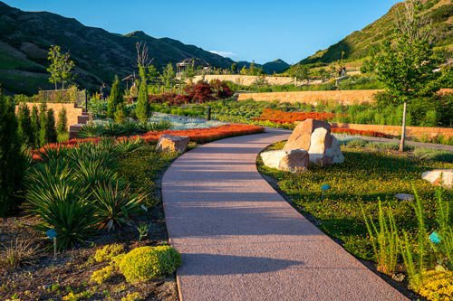

5 Tips for Creating a Water-Wise Garden
Conserving water is crucial, especially during droughts. Learn 5 practical tips to create a beautiful and sustainable garden that thrives without wasting water.
Read More Published on May 5, 2024Here at Nature's Haven, we're passionate about creating beautiful and sustainable landscapes. We also love to share our knowledge and tips with our readers. In this blog, you'll find articles on a variety of topics related to eco-friendly landscaping, gardening, and creating a healthy outdoor space for you and your family.
Conserving water is crucial, especially during droughts. Learn 5 practical tips to create a beautiful and sustainable garden that thrives without wasting water.
Read More Published on May 5, 2024Native plants offer a wealth of benefits for your landscape and the environment. Discover why incorporating native plants is a smart choice for your outdoor space.
Read More Published on April 20, 2024